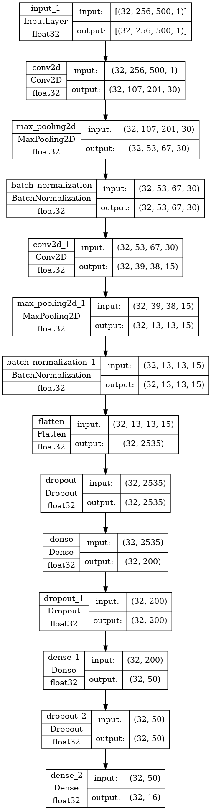
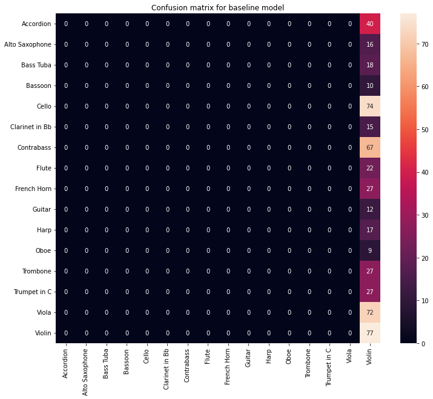

import glob
import os
import random
from datetime import datetime
import librosa
import librosa.display
import matplotlib.pyplot as plt
import numpy as np
import pandas as pd
import scipy.stats
import seaborn as sns
import tensorflow as tf
import tensorflow.python.platform.build_info as build
from sklearn.model_selection import train_test_split
from sklearn.preprocessing import OneHotEncoder
from tensorflow.keras import datasets, layers, models
from tensorflow.python.client import device_lib
from spec_generator_sequence import spec_generator
from spec_input_generator import gen, gen_eval
# import spectrogram
# from spectrogram import generate_spec
# from spectrogram import truncate_spec
# from spectrogram import mask_spec
# from spectrogram import add_noise
# from spectrogram import path_to_preprocessing
from spectrogram_class import spectrogramOrchideaSOL CNN
This notebooks is succesive from the baseline model notebook from music_transcription_class.ipynb.
In the notebook, we had demonstrate the limitation of simple CNN model on classifying instruments from raw audio files.
In this notebook, we will be running a similar CNN architecture, but with deeper layers, and applying regularization, batch normalization and dropout techniques.
print(build.build_info['cuda_version'])11.2device_lib.list_local_devices()2022-08-08 07:35:52.733084: I tensorflow/core/platform/cpu_feature_guard.cc:193] This TensorFlow binary is optimized with oneAPI Deep Neural Network Library (oneDNN) to use the following CPU instructions in performance-critical operations: AVX2 FMA
To enable them in other operations, rebuild TensorFlow with the appropriate compiler flags.
2022-08-08 07:35:52.777510: I tensorflow/stream_executor/cuda/cuda_gpu_executor.cc:975] successful NUMA node read from SysFS had negative value (-1), but there must be at least one NUMA node, so returning NUMA node zero
2022-08-08 07:35:52.813076: I tensorflow/stream_executor/cuda/cuda_gpu_executor.cc:975] successful NUMA node read from SysFS had negative value (-1), but there must be at least one NUMA node, so returning NUMA node zero
2022-08-08 07:35:52.813878: I tensorflow/stream_executor/cuda/cuda_gpu_executor.cc:975] successful NUMA node read from SysFS had negative value (-1), but there must be at least one NUMA node, so returning NUMA node zero
2022-08-08 07:35:53.814786: I tensorflow/stream_executor/cuda/cuda_gpu_executor.cc:975] successful NUMA node read from SysFS had negative value (-1), but there must be at least one NUMA node, so returning NUMA node zero
2022-08-08 07:35:53.815302: I tensorflow/stream_executor/cuda/cuda_gpu_executor.cc:975] successful NUMA node read from SysFS had negative value (-1), but there must be at least one NUMA node, so returning NUMA node zero
2022-08-08 07:35:53.815685: I tensorflow/stream_executor/cuda/cuda_gpu_executor.cc:975] successful NUMA node read from SysFS had negative value (-1), but there must be at least one NUMA node, so returning NUMA node zero
2022-08-08 07:35:53.816454: I tensorflow/core/common_runtime/gpu/gpu_device.cc:1532] Created device /device:GPU:0 with 3085 MB memory: -> device: 0, name: NVIDIA GeForce GTX 1050, pci bus id: 0000:01:00.0, compute capability: 6.1[name: "/device:CPU:0"
device_type: "CPU"
memory_limit: 268435456
locality {
}
incarnation: 13176899990423004209
xla_global_id: -1,
name: "/device:GPU:0"
device_type: "GPU"
memory_limit: 3235774464
locality {
bus_id: 1
links {
}
}
incarnation: 4598158092110336817
physical_device_desc: "device: 0, name: NVIDIA GeForce GTX 1050, pci bus id: 0000:01:00.0, compute capability: 6.1"
xla_global_id: 416903419]tf.test.is_gpu_available()WARNING:tensorflow:From /tmp/ipykernel_49617/337460670.py:1: is_gpu_available (from tensorflow.python.framework.test_util) is deprecated and will be removed in a future version.
Instructions for updating:
Use `tf.config.list_physical_devices('GPU')` instead.2022-08-08 07:35:53.919564: I tensorflow/stream_executor/cuda/cuda_gpu_executor.cc:975] successful NUMA node read from SysFS had negative value (-1), but there must be at least one NUMA node, so returning NUMA node zeroTrue2022-08-08 07:35:53.920078: I tensorflow/stream_executor/cuda/cuda_gpu_executor.cc:975] successful NUMA node read from SysFS had negative value (-1), but there must be at least one NUMA node, so returning NUMA node zero
2022-08-08 07:35:53.920462: I tensorflow/stream_executor/cuda/cuda_gpu_executor.cc:975] successful NUMA node read from SysFS had negative value (-1), but there must be at least one NUMA node, so returning NUMA node zero
2022-08-08 07:35:53.920851: I tensorflow/stream_executor/cuda/cuda_gpu_executor.cc:975] successful NUMA node read from SysFS had negative value (-1), but there must be at least one NUMA node, so returning NUMA node zero
2022-08-08 07:35:53.921170: I tensorflow/stream_executor/cuda/cuda_gpu_executor.cc:975] successful NUMA node read from SysFS had negative value (-1), but there must be at least one NUMA node, so returning NUMA node zero
2022-08-08 07:35:53.921402: I tensorflow/core/common_runtime/gpu/gpu_device.cc:1532] Created device /device:GPU:0 with 3085 MB memory: -> device: 0, name: NVIDIA GeForce GTX 1050, pci bus id: 0000:01:00.0, compute capability: 6.1tf.config.list_physical_devices('GPU')2022-08-08 07:35:54.029967: I tensorflow/stream_executor/cuda/cuda_gpu_executor.cc:975] successful NUMA node read from SysFS had negative value (-1), but there must be at least one NUMA node, so returning NUMA node zero
2022-08-08 07:35:54.030428: I tensorflow/stream_executor/cuda/cuda_gpu_executor.cc:975] successful NUMA node read from SysFS had negative value (-1), but there must be at least one NUMA node, so returning NUMA node zero
2022-08-08 07:35:54.030817: I tensorflow/stream_executor/cuda/cuda_gpu_executor.cc:975] successful NUMA node read from SysFS had negative value (-1), but there must be at least one NUMA node, so returning NUMA node zero[PhysicalDevice(name='/physical_device:GPU:0', device_type='GPU')]gpu_devices = tf.config.experimental.list_physical_devices('GPU')
gpu_devices[PhysicalDevice(name='/physical_device:GPU:0', device_type='GPU')]We first start by generating training and testing dataset as usual.
meta_df = pd.read_csv('../data/OrchideaSOL_metadata.csv')meta_df.head(2)| Path | Family (abbr.) | Family (in full) | Instrument (abbr.) | Instrument (in full) | Technique (abbr.) | Technique (in full) | Pitch | Pitch ID (if applicable) | Dynamics | Dynamics ID (if applicable) | Instance ID | Mute (abbr.) | Mute (in full) | String ID (if applicable) | Needed digital retuning | Fold | |
|---|---|---|---|---|---|---|---|---|---|---|---|---|---|---|---|---|---|
| 0 | Brass/Bass_Tuba+sordina/ordinario/BTb+S-ord-A#... | Brass | Brass | BTb | Bass Tuba | ord | ordinario | A#0 | 22.0 | f | 3.0 | 0.0 | S | Sordina | NaN | False | 2 |
| 1 | Brass/Bass_Tuba+sordina/ordinario/BTb+S-ord-A#... | Brass | Brass | BTb | Bass Tuba | ord | ordinario | A#0 | 22.0 | p | 1.0 | 0.0 | S | Sordina | NaN | True | 0 |
# Splitting data for training and testing
train_df, test_df = train_test_split(meta_df, stratify=meta_df['Instrument (in full)'],
train_size=0.8)train_df.head(2)| Path | Family (abbr.) | Family (in full) | Instrument (abbr.) | Instrument (in full) | Technique (abbr.) | Technique (in full) | Pitch | Pitch ID (if applicable) | Dynamics | Dynamics ID (if applicable) | Instance ID | Mute (abbr.) | Mute (in full) | String ID (if applicable) | Needed digital retuning | Fold | |
|---|---|---|---|---|---|---|---|---|---|---|---|---|---|---|---|---|---|
| 4961 | Strings/Contrabass/pizzicato_l_vib/Cb-pizz_lv-... | Strings | Violin Family | Cb | Contrabass | pizz_lv | pizzicato_l_vib | E1 | 28.0 | mf | 2.0 | 3.0 | N | None | 4.0 | False | 2 |
| 3401 | PluckedStrings/Guitar/ordinario/Gtr-ord-F#5-ff... | PluckedStrings | Plucked Strings | Gtr | Guitar | ord | ordinario | F#5 | 78.0 | ff | 4.0 | 0.0 | N | None | 1.0 | True | 1 |
sample = next(gen(train_df, return_class = True))# Getting the shape of input from generator
spec_shape = sample[0].spec.shape
spec_shape(256, 500, 1)next(gen_eval(test_df))[0].shape(256, 500, 1)We will be using the same Sequence data generator, as in previous notebook. However, to optimize our performance, we will be converting the generator in to a tf Dataset object, and optimized the performance by prefetching the dataset while fitting is in progress.
The process of prefecthing and training can be visualized using tf.data API. Which is in the todo list of this project.
BATCH_SIZE = 32
train_generator = (tf.data.Dataset.from_generator(lambda: spec_generator(train_df, BATCH_SIZE,
add_channel = True), output_types=(tf.float32, tf.int32),
output_shapes = ((BATCH_SIZE, spec_shape[0], spec_shape[1], 1),
(BATCH_SIZE, 16)))).prefetch((tf.data.experimental.AUTOTUNE))
eval_generator = (tf.data.Dataset.from_generator(lambda: spec_generator(test_df, BATCH_SIZE,
add_channel = True),
output_types=(tf.float32, tf.int32),
output_shapes = ((BATCH_SIZE, spec_shape[0], spec_shape[1], 1),
(BATCH_SIZE, 16)))).prefetch((tf.data.experimental.AUTOTUNE))2022-08-08 07:35:55.370698: I tensorflow/stream_executor/cuda/cuda_gpu_executor.cc:975] successful NUMA node read from SysFS had negative value (-1), but there must be at least one NUMA node, so returning NUMA node zero
2022-08-08 07:35:55.371338: I tensorflow/stream_executor/cuda/cuda_gpu_executor.cc:975] successful NUMA node read from SysFS had negative value (-1), but there must be at least one NUMA node, so returning NUMA node zero
2022-08-08 07:35:55.371817: I tensorflow/stream_executor/cuda/cuda_gpu_executor.cc:975] successful NUMA node read from SysFS had negative value (-1), but there must be at least one NUMA node, so returning NUMA node zero
2022-08-08 07:35:55.372308: I tensorflow/stream_executor/cuda/cuda_gpu_executor.cc:975] successful NUMA node read from SysFS had negative value (-1), but there must be at least one NUMA node, so returning NUMA node zero
2022-08-08 07:35:55.372680: I tensorflow/stream_executor/cuda/cuda_gpu_executor.cc:975] successful NUMA node read from SysFS had negative value (-1), but there must be at least one NUMA node, so returning NUMA node zero
2022-08-08 07:35:55.372983: I tensorflow/core/common_runtime/gpu/gpu_device.cc:1532] Created device /job:localhost/replica:0/task:0/device:GPU:0 with 3085 MB memory: -> device: 0, name: NVIDIA GeForce GTX 1050, pci bus id: 0000:01:00.0, compute capability: 6.1# Sanity check for shape
train_generator<PrefetchDataset element_spec=(TensorSpec(shape=(32, 256, 500, 1), dtype=tf.float32, name=None), TensorSpec(shape=(32, 16), dtype=tf.int32, name=None))>Now we can finally start to build our model, the idea is same as before, a deeper convolutional model, including dropouts and regularization.
# Starting the model
model_2conv = models.Sequential()
# Adding the first convoluton-pooling layer
model_2conv.add(layers.InputLayer((spec_shape[0], spec_shape[1], 1),
batch_size = BATCH_SIZE, dtype = tf.float32))
model_2conv.add(layers.Conv2D(30, (150, 300), activation='relu',
kernel_regularizer = tf.keras.regularizers.L2(l2=0.01)))
model_2conv.add(layers.MaxPool2D((2, 3)))
model_2conv.add(layers.BatchNormalization())
# Addig the second convolutional-pooling layer
model_2conv.add(layers.Conv2D(15, (15, 30), activation = 'relu',
kernel_regularizer = tf.keras.regularizers.L2(l2=0.01)))
model_2conv.add(layers.MaxPool2D(2, 3))
model_2conv.add(layers.BatchNormalization())
# Combined the filter layers into 1
model_2conv.add(layers.Flatten())
model_2conv.add(layers.Dropout(0.2))
model_2conv.add(layers.Dense(200, activation = 'relu'))
model_2conv.add(layers.Dropout(0.2))
model_2conv.add(layers.Dense(50, activation = 'relu'))
model_2conv.add(layers.Dropout(0.2))
# Final layer to classify the 16 instruments
# We are using softmax activation since this is a multiclass classification problem
model_2conv.add(layers.Dense(16, activation = 'softmax'))
model_2conv.build()# Visualizing the CNN architecture
tf.keras.utils.plot_model(model_2conv, show_shapes = True, show_dtype= True)
Our input shape will be the same as in the previous notebook, with 256 frequency bins and 500 timesteps
Our output layer consists of 16 neurons, each representing one possible instrument class.
Since we will be predicting a multiclass label (Only one true label over multiple options), we will be using categorical cross entropy as our loss function, note the this is the reason why we have chose to use softmax as the activation function of our output layer.
model_2conv.compile(optimizer=tf.keras.optimizers.Adam(learning_rate=0.03),
loss=tf.keras.losses.CategoricalCrossentropy(),
metrics=['accuracy'])model_2conv.summary()Model: "sequential"
_________________________________________________________________
Layer (type) Output Shape Param #
=================================================================
conv2d (Conv2D) (32, 107, 201, 30) 1350030
max_pooling2d (MaxPooling2D (32, 53, 67, 30) 0
)
batch_normalization (BatchN (32, 53, 67, 30) 120
ormalization)
conv2d_1 (Conv2D) (32, 39, 38, 15) 202515
max_pooling2d_1 (MaxPooling (32, 13, 13, 15) 0
2D)
batch_normalization_1 (Batc (32, 13, 13, 15) 60
hNormalization)
flatten (Flatten) (32, 2535) 0
dropout (Dropout) (32, 2535) 0
dense (Dense) (32, 200) 507200
dropout_1 (Dropout) (32, 200) 0
dense_1 (Dense) (32, 50) 10050
dropout_2 (Dropout) (32, 50) 0
dense_2 (Dense) (32, 16) 816
=================================================================
Total params: 2,070,791
Trainable params: 2,070,701
Non-trainable params: 90
_________________________________________________________________# model_2conv = tf.keras.models.load_model('../models/2conv/six/')Model training
Now that we have done the setup we can finally train our model
# ckpt_callback = tf.keras.callbacks.ModelCheckpoint(
# f"../models/baseline_checkpoint/{datetime.now().strftime('%Y%m%d_%H%M%S')}_{{epoch:02d}}_model_2conv",
# monitor='val_accuracy')
# early_callback = tf.keras.callbacks.EarlyStopping(monitor = 'accuracy', patience = 2)
# history = model_2conv.fit(train_generator, epochs = 4, verbose=1,
# validation_data = eval_generator,
# validation_steps = 10, validation_freq= 2,
# use_multiprocessing=True, workers = 2, callbacks=[ckpt_callback, early_callback])# model_2conv.save('../models/new_OrchideaSOL_2conv/')Model Evaluating
# plt.plot([2, 4], history.history['val_accuracy'], label = 'Validation accuracy')
# plt.plot([1, 2, 3, 4], history.history['accuracy'], label = 'Training accuracy')
# plt.title('Accuracy of baseline model after early callback')
# plt.xlabel('Epoch')
# plt.ylabel('Accuracy')
# plt.legend()
# plt.show()The figure above shows the accuracy of 4 epochs we have ran, combining with the our baseline model of one convolutional layers, we can conclude that basic CNN since to be performing poorly on this problem. Since
- Both the validation and training accuracy starts to drop after 3 epochs
- Training time is around 30 minutes per epoch
We can still look at the loos function
# plt.plot([2, 4], history.history['val_loss'], label = 'Validation loss')
# plt.plot([1, 2, 3, 4], history.history['loss'], label = 'Training loss')
# plt.title('Loss of baseline model after early callback')
# plt.xlabel('Epoch')
# plt.ylabel('Loss')
# plt.legend()
# plt.show()I have mistakenly run the code without saving the history, and lost the plot
The general shape of the figure is a sharp drop at first spoch, and remained fairly strat with minimal decrease after that
The loss function hardly decrease after the first epoch, however, both the decerase of loss function and accuracy represents that the categorical cross entropy might not be the best choice for such classification problem.
But the model might inprove after several epoch, this notebook is yet to be run again with longer time after the more important preceeding notebooks (Sequential music transcription with LSTM) had been done.
Also the hyperparameter such as the number of frequency bins, optimizer and regularization coefficient still can be optimized. Due to the limited time and high training time, this notebook had been added to the to do list, and decreased in priority.
Now let’s look at the confusion matrix
def orchidea_confusion_matrix(model, generator, instrument_list):
'''
Plot confusion matrix for OrchideaSOL dataset
Input:
model: Model to be used
generator: Sequence class, generator to generate feature and labels for
OrchideaSOL dataset
instrument_list: list of instrument in alphabetical order, used to label the plot
Output:
predict: np.array, Predicted output
prediction_label: np.array, True label
'''
prediction_feature, prediction_label = generator.__getitem__(0)
predict = predict = model.predict(prediction_feature)
assert prediction_label.shape == predict.shape
from sklearn.metrics import confusion_matrix
plt.figure(figsize = (12, 10))
sns.heatmap(confusion_matrix(np.argmax(prediction_label, axis=1),
np.argmax(predict, axis = 1)), annot = True,
xticklabels=instrument_list,
yticklabels=instrument_list)
plt.title('Confusion matrix for baseline model')
plt.show()
return predict, prediction_labelmodel = tf.keras.models.load_model('../models/baseline_checkpoint/20220807_052111_02_model_2conv')# Defining generator to be used in our evaluation
# Since our gpu memory space is very limited, we wil be using 1/10 of
# testing dataset, and omitting any data augmentation on the spectrogram
prediction_generator = spec_generator(test_df, test_df.shape[0] // 5, add_channel=True,
live_generation = True, preprocess = False,
n_mels = 256)
instrument_list = sorted(meta_df['Instrument (in full)'].unique())
instrument_list['Accordion',
'Alto Saxophone',
'Bass Tuba',
'Bassoon',
'Cello',
'Clarinet in Bb',
'Contrabass',
'Flute',
'French Horn',
'Guitar',
'Harp',
'Oboe',
'Trombone',
'Trumpet in C',
'Viola',
'Violin']predict, predict_label = orchidea_confusion_matrix(model,
prediction_generator, instrument_list)2022-08-08 07:37:20.613548: W tensorflow/core/framework/cpu_allocator_impl.cc:82] Allocation of 271360000 exceeds 10% of free system memory.
2022-08-08 07:37:20.955501: W tensorflow/core/framework/cpu_allocator_impl.cc:82] Allocation of 271360000 exceeds 10% of free system memory.
2022-08-08 07:37:21.382134: W tensorflow/core/framework/cpu_allocator_impl.cc:82] Allocation of 16384000 exceeds 10% of free system memory.
2022-08-08 07:37:21.382196: W tensorflow/core/framework/cpu_allocator_impl.cc:82] Allocation of 16384000 exceeds 10% of free system memory.
2022-08-08 07:37:21.382234: W tensorflow/core/framework/cpu_allocator_impl.cc:82] Allocation of 16384000 exceeds 10% of free system memory.
2022-08-08 07:37:22.156406: I tensorflow/stream_executor/cuda/cuda_dnn.cc:384] Loaded cuDNN version 8100
2022-08-08 07:37:25.464340: I tensorflow/core/platform/default/subprocess.cc:304] Start cannot spawn child process: No such file or directory
2022-08-08 07:37:25.467227: I tensorflow/core/platform/default/subprocess.cc:304] Start cannot spawn child process: No such file or directory
2022-08-08 07:37:25.467562: W tensorflow/stream_executor/gpu/asm_compiler.cc:80] Couldn't get ptxas version string: INTERNAL: Couldn't invoke ptxas --version
2022-08-08 07:37:25.469313: I tensorflow/core/platform/default/subprocess.cc:304] Start cannot spawn child process: No such file or directory
2022-08-08 07:37:25.469628: W tensorflow/stream_executor/gpu/redzone_allocator.cc:314] INTERNAL: Failed to launch ptxas
Relying on driver to perform ptx compilation.
Modify $PATH to customize ptxas location.
This message will be only logged once.17/17 [==============================] - 87s 3s/step
ERROR
Further inspection is needed, as the model converged to predicting the same class at the end od epoch.